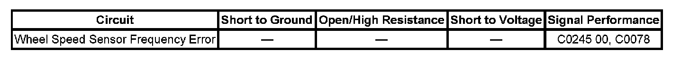

Antilock Brakes / Traction Control Systems
DTC C0245
DTC Descriptor
DTC C0245 00
Wheel Speed Sensor Frequency Error
DTC C0078 00
Wheel Speed Sensor Frequency Error (PHT)
Diagnostic Fault Information
Perform the Diagnostic System Check - Vehicle prior to using this diagnostic procedure. Initial Inspection and Diagnostic Overview

Circuit/System Description
The wheel speed sensor receives a 12-volt power supply voltage for vehicles equal to or under 8600 GVW or 5-volt for vehicles over 8600 GVW from the electronic brake control module (EBCM) and provides an output signal to the EBCM. As the wheel spins, the wheel speed sensor sends the EBCM a DC square wave signal. The EBCM uses the frequency of the square wave signal to calculate the wheel speed.
Conditions for Running the DTC
^ The ignition is ON.
^ Ignition voltage is greater than 9.5 volts.
^ No wheel speed sensor faults exist.
^ Brake is not applied.
^ Vehicle is not cornering.
^ No wheel spinning is detected.
Conditions for Setting the DTC
Wheel speed differences between one wheel and the others is greater than 25 percent.
Action Taken When the DTC Sets
^ Antilock Brake System (ABS), Traction Control System (TCS) and Vehicle Stability Enhancement System (VSES) are disabled for the remainder of the ignition cycle.
^ The ABS and Stabilitrak indicator turns ON.
^ The service Traction Control and Stabilitrak displays on the DIC.
Conditions for Clearing the DTC
^ The DTC becomes history when the conditions for setting the DTC are no longer present.
^ The history DTC clears after 100 malfunction-free ignition cycles.
^ The EBCM receives a clear code command from the scan tool.
Diagnostic Aids
^ Faulty wheel speed sensor will not set this DTC.
^ A vehicle using a space saver spare will not set this code.
Reference Information
Schematic Reference
Antilock Brake System Schematics
Connector End View Reference
Antilock Brake System Connector End Views
Description and Operation
ABS Description and Operation (Under 8600 GVW ) ABS Description and Operation (Equal to or Over 8600 GVW)
Electrical Information Reference
^ Circuit Testing
^ Connector Repairs
^ Testing for Intermittent Conditions and Poor Connections
^ Wiring Repairs
Scan Tool Reference
Scan Tool Data List for EBCM
Circuit/System Verification
Inspect for one tire that has improper air pressure or improper size.
Inspect the wheel speed sensors and tone rings for damage, incorrect application, or incorrect installation.
Repair Instructions
Perform the Diagnostic Repair Verification after completing the diagnostic procedure. Verification Tests